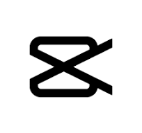

Il s'agit d'un outil de montage vidéo compatible avec Android et iOS qui est également disponible sur l'ordinateur. CapCut permet aux utilisateurs de créer des vidéos originales gratuitement. En effet, elle propose des filtres, des musiques et des sous-titres pour personnaliser les vidéos.
